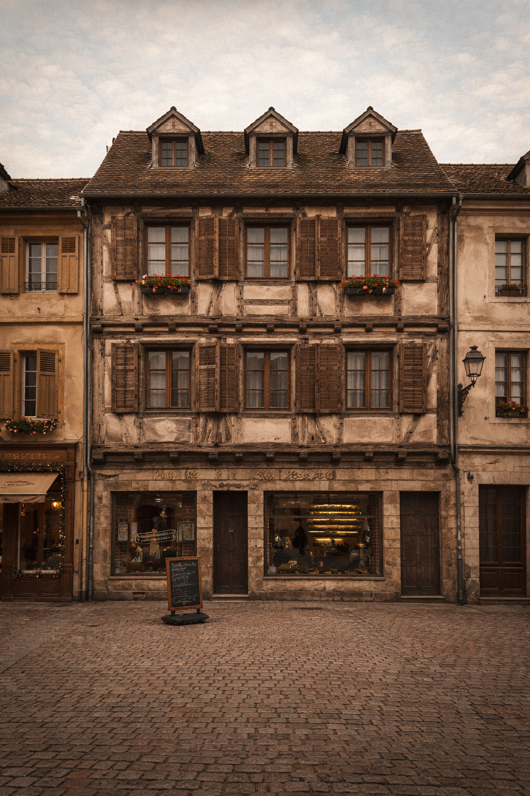

You are in front of Henriette's house, as it looked in the past.

Rue Henriette bears a female first name. In Mulhouse, these streets pay tribute to women linked to the city's industrial and family history.
Tap the screen to continue
The finished fabric symbolizes Mulhouse's textile memory: color, pattern, and assembly brought together.
Tap the screen to read messages